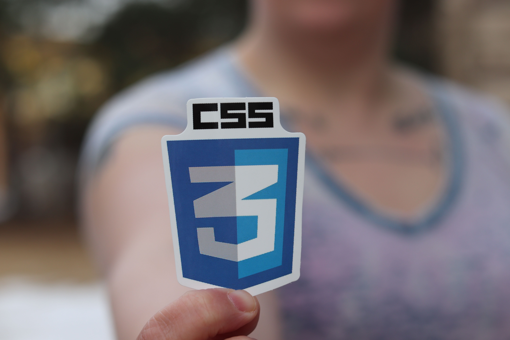

Apa Itu Fullstack Developer
Fullstack Developer adalah seorang pengembang perangkat
lunak yang memiliki kemampuan untuk membangun dan mengelola
aplikasi web dari sisi frontend maupun backend. Seorang
Fullstack Developer tidak hanya memahami bagaimana tampilan
website dibuat, tetapi juga memahami bagaimana data
diproses, disimpan, dan dikirimkan melalui server.
Dalam dunia pengembangan web modern, profesi ini menjadi
salah satu profesi yang paling banyak dicari karena mampu
menangani berbagai kebutuhan pengembangan aplikasi dalam
satu tim maupun secara mandiri.
Tugas Fullstack Developer
Tugas seorang Fullstack Developer meliputi perancangan
antarmuka pengguna, pengembangan logika aplikasi,
pengelolaan database, pengujian sistem, hingga proses
deployment aplikasi ke server agar dapat digunakan oleh
pengguna.
Skill yang Harus Dipelajari
Untuk menjadi Fullstack Developer, seseorang perlu
mempelajari HTML, CSS, JavaScript, database, backend
development, Git, GitHub, API, serta berbagai teknologi
pendukung lainnya yang digunakan dalam pengembangan web.
Frontend dan Backend
Frontend adalah bagian website yang dilihat dan digunakan
langsung oleh pengguna. Backend adalah bagian yang bekerja
di belakang layar untuk mengelola data, autentikasi, dan
berbagai proses bisnis aplikasi.
Peluang Karier
Dengan perkembangan teknologi yang sangat cepat, peluang
karier sebagai Fullstack Developer semakin luas. Banyak
perusahaan startup maupun perusahaan besar membutuhkan
pengembang yang mampu bekerja pada kedua sisi tersebut.
Belajar HTML sebagai Fondasi Web
HTML atau HyperText Markup Language merupakan bahasa markup
standar yang digunakan untuk menyusun struktur halaman web.
Semua website yang ada di internet pada dasarnya memiliki
struktur yang dibangun menggunakan HTML.
Pengertian HTML
HTML berfungsi sebagai kerangka utama sebuah website.
Melalui HTML, pengembang dapat menentukan bagian mana yang
menjadi judul, paragraf, gambar, tabel, formulir, dan
berbagai elemen lainnya.
Fungsi HTML
Fungsi utama HTML adalah memberikan struktur pada halaman
web sehingga browser dapat memahami dan menampilkan konten
dengan benar kepada pengguna.
Struktur Dasar HTML
Struktur dasar HTML terdiri dari deklarasi DOCTYPE, elemen
html, head, dan body. Struktur ini menjadi fondasi setiap
halaman web yang dibuat oleh pengembang.
Contoh Tag HTML
Beberapa tag yang sering digunakan antara lain heading,
paragraph, image, anchor, table, form, dan berbagai elemen
semantik seperti header, nav, main, article, aside, serta
footer.
Mengapa HTML Penting
HTML merupakan langkah pertama yang wajib dipelajari oleh
setiap calon Web Developer karena menjadi dasar bagi CSS
dan JavaScript untuk bekerja dalam sebuah website.
Mengenal CSS untuk Mempercantik Tampilan

CSS atau Cascading Style Sheets merupakan bahasa yang
digunakan untuk mengatur tampilan dan desain sebuah website.
Jika HTML berfungsi sebagai kerangka bangunan, maka CSS
berfungsi sebagai cat, dekorasi, dan tata letak yang membuat
website terlihat menarik.
Pengertian CSS
CSS adalah teknologi yang digunakan untuk mengatur warna,
ukuran teks, jenis font, jarak antar elemen, posisi elemen,
hingga animasi sederhana pada halaman web.
Fungsi CSS
Fungsi utama CSS adalah memisahkan struktur dan tampilan
website sehingga kode menjadi lebih rapi, mudah dikelola,
dan lebih profesional.
Jenis CSS
CSS memiliki beberapa cara penerapan, yaitu Inline CSS,
Internal CSS, dan External CSS. Dalam proyek yang baik,
penggunaan External CSS lebih disarankan karena memudahkan
pengelolaan kode.
Contoh Penggunaan CSS
CSS dapat digunakan untuk mengubah warna latar belakang,
mengatur ukuran teks, membuat tombol interaktif, menyusun
layout menggunakan Flexbox, dan membuat website menjadi
responsif pada berbagai ukuran layar.
Mengapa CSS Penting
Tanpa CSS, website hanya akan menampilkan teks dan elemen
secara sederhana. CSS membantu menciptakan pengalaman
pengguna yang lebih nyaman dan menarik.
JavaScript untuk Membuat Website Interaktif

JavaScript merupakan bahasa pemrograman yang digunakan untuk
menambahkan interaktivitas pada website. Dengan JavaScript,
website dapat merespons tindakan pengguna secara langsung.
Pengertian JavaScript
JavaScript adalah bahasa pemrograman yang berjalan di browser
dan memungkinkan pengembang membuat website yang dinamis,
interaktif, dan modern.
Fungsi JavaScript
JavaScript digunakan untuk memvalidasi formulir, membuat
animasi, mengubah konten halaman secara dinamis, serta
berkomunikasi dengan server melalui API.
Contoh Penggunaan JavaScript
Contoh penerapan JavaScript dapat ditemukan pada menu
navigasi interaktif, sistem login, kalkulator online,
dashboard aplikasi, dan berbagai fitur modern lainnya.
Peran JavaScript dalam Website Modern
Hampir seluruh website modern saat ini menggunakan
JavaScript karena mampu meningkatkan pengalaman pengguna
melalui interaksi yang lebih cepat dan responsif.
Mengapa JavaScript Penting bagi Fullstack Developer
JavaScript dapat digunakan pada sisi frontend maupun backend.
Oleh karena itu, bahasa ini menjadi salah satu teknologi
utama yang wajib dipelajari oleh calon Fullstack Developer.
Target Karier di Bidang IT
Perjalanan belajar di bidang teknologi informasi merupakan
proses yang membutuhkan konsistensi, latihan, dan kemauan
untuk terus berkembang. Setiap teknologi baru yang dipelajari
akan menjadi bekal untuk menghadapi tantangan di dunia kerja.
Perjalanan Belajar Saya
Saya memulai perjalanan ini dengan mempelajari dasar-dasar
HTML dan CSS. Setelah memahami struktur dan tampilan website,
saya mulai mempelajari JavaScript untuk menambahkan
interaktivitas pada aplikasi web.
Alasan Memilih Fullstack Developer
Saya tertarik menjadi Fullstack Developer karena profesi ini
memungkinkan seseorang memahami keseluruhan proses pembuatan
aplikasi, mulai dari tampilan hingga pengolahan data di
server.
Teknologi yang Ingin Dipelajari
Selain HTML, CSS, dan JavaScript, saya juga ingin
mempelajari Node.js, Express.js, React, database SQL,
database NoSQL, Git, GitHub, REST API, serta berbagai
teknologi cloud modern.
Target Karier Masa Depan
Target saya adalah menjadi seorang Fullstack Developer yang
mampu membangun aplikasi web profesional dan memberikan
solusi teknologi yang bermanfaat bagi masyarakat.
Roadmap Belajar Fullstack Developer
Menjadi seorang Fullstack Developer tidak dapat dicapai
secara instan. Dibutuhkan proses belajar yang terstruktur
agar setiap teknologi dapat dipahami dengan baik dan dapat
digunakan dalam pengembangan aplikasi nyata.
Memahami Dasar HTML
Langkah pertama adalah mempelajari HTML sebagai fondasi
utama website. Pada tahap ini, fokus pembelajaran meliputi
struktur halaman, elemen semantik, formulir, tabel, dan
berbagai komponen dasar lainnya.
Mempelajari CSS dan Layout
Setelah memahami HTML, tahap berikutnya adalah mempelajari
CSS untuk mengatur tampilan website. Materi penting yang
perlu dipahami antara lain Flexbox, Grid Layout, Responsive
Design, dan Media Query.
Belajar JavaScript
JavaScript menjadi langkah berikutnya untuk membuat website
lebih dinamis dan interaktif. Pemahaman dasar seperti
variabel, fungsi, array, objek, serta DOM sangat penting
sebelum mempelajari framework modern.
Mempelajari Backend Development
Setelah menguasai frontend, pembelajaran berlanjut ke sisi
backend menggunakan teknologi seperti Node.js dan Express.js
untuk membangun server dan API.
Menguasai Database
Database digunakan untuk menyimpan dan mengelola data
aplikasi. Teknologi yang umum digunakan adalah MySQL,
PostgreSQL, dan MongoDB.
Teknologi yang Ingin Saya Pelajari Selanjutnya
Dunia teknologi berkembang sangat cepat. Oleh karena itu,
seorang calon Fullstack Developer perlu memiliki semangat
belajar yang tinggi agar dapat mengikuti perkembangan
industri.
React
React merupakan library JavaScript yang banyak digunakan
untuk membangun antarmuka pengguna yang cepat, modern,
dan mudah dikelola.
Node.js
Node.js memungkinkan JavaScript digunakan pada sisi server
sehingga pengembang dapat menggunakan satu bahasa
pemrograman untuk frontend dan backend.
Express.js
Express.js membantu proses pembuatan server dan API menjadi
lebih cepat dan terstruktur dibanding menggunakan Node.js
murni.
Database Modern
Saya ingin memperdalam penggunaan database relasional
maupun non-relasional agar mampu membangun aplikasi yang
dapat menangani data dalam jumlah besar.
Cloud Computing
Teknologi cloud menjadi salah satu keterampilan penting
karena banyak perusahaan modern menggunakan layanan cloud
untuk menjalankan aplikasi mereka secara efisien.